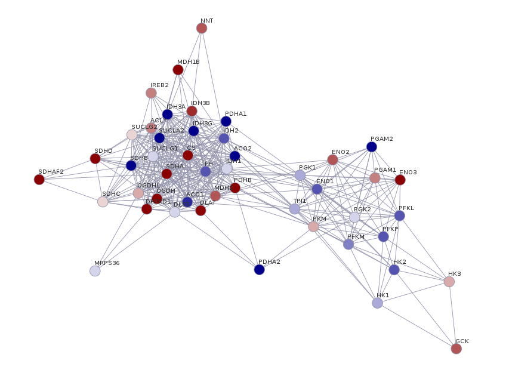

library(RedeR)
library(igraph)Suppose that we have a set of differentially expressed genes (DEG) from RNA-Seq data and their corresponding log2FoldChanges. Let’s create a protein-protein interaction (PPI) network with StringDB using some R packages. By combining PPI information and gene expression, we can have insights about how the DEGs can impact (or be impacted by) other genes.
You can download the data from this tutorial here.

Step 1: Retrieve the PPI network from StringDB
Before starting, you’ll need to install and load the following packages:
Let’s import the table with the DEGs. In this table there is a column for gene symbols and another column for their corresponding log2FoldChanges.
degs <- read.csv("exp-table.csv")
head(degs) genes log2fc
1 ACLY 0.6864199
2 ACO1 -1.4629591
3 ACO2 -3.7851444
4 CS 2.0569852
5 DHTKD1 3.0715545
6 DLAT 1.8612732We’re using the stringDB API to retrieve PPI information (for more information of each API’s methods, visit https://string-db.org/help/api/).
The first method to be used is the get_string_ids, which will map a list of genes to the stringDB’s identifiers (https://string-db.org/cgi/help.pl?subpage=api%23mapping-identifiers.
When submitting a request to the stringDB API programmatically, we need to concatenate the identifiers by the symbol “%0d” (this is the standard separator for gene names).
genes <- paste0(degs$genes, collapse = "%0d")Now we can make a request with the postForm function from the RCurl package. An important parameter is the species, which stands for the NCBI taxonomy ID for the genes/proteins we’re considering. In this case, we are dealing with human genes (taxid: 9606).
req <- RCurl::postForm(
"https://string-db.org/api/tsv/get_string_ids",
identifiers = genes, # gene names
echo_query = "1",
species = "9606" # homo sapiens taxid
)
ids_mapped <- read.table(text = req, sep = "\t", header = T, quote = "")
head(ids_mapped[,1:3]) queryItem queryIndex stringId
1 ACLY 0 9606.ENSP00000466259
2 ACO1 1 9606.ENSP00000309477
3 ACO2 2 9606.ENSP00000216254
4 CS 3 9606.ENSP00000342056
5 DHTKD1 4 9606.ENSP00000263035
6 DLAT 5 9606.ENSP00000280346We mapped each gene name to their corresponding proteins annotated on the StringDB (the stringId column). Now, let’s use these StringIDs to retrieve the interaction information:
stringids <- paste0(unique(ids_mapped$stringId), collapse = "%0d")
req <- RCurl::postForm(
"https://string-db.org/api/tsv/network",
identifiers = stringids, # stringids
required_core = "0", # minimal score
species = "9606" # homo sapiens taxid
)
ppi <- read.table(text = req, sep = "\t", header = T)
head(ppi[,1:2]) stringId_A stringId_B
1 9606.ENSP00000216254 9606.ENSP00000258886
2 9606.ENSP00000216254 9606.ENSP00000223366
3 9606.ENSP00000216254 9606.ENSP00000297283
4 9606.ENSP00000216254 9606.ENSP00000295266
5 9606.ENSP00000216254 9606.ENSP00000290573
6 9606.ENSP00000216254 9606.ENSP00000264663The dataframe represents a network format called edge list. It represents the interaction between the proteins on the stringId_A column and the proteins on the stringId_B column. For example, the protein 9606.ENSP00000216254 interacts with the protein 9606.ENSP00000258886. The interaction information of a given protein A and a protein B comes from different sources or channels. StringDB returns the following channels:
score: combined score
nscore: gene neighborhood score
fscore: gene fusion score
pscore: phylogenetic profile score
ascore: coexpression score
escore: experimental score
dscore: database score
tscore: textmining score
As you guessed, the combined score represents the score combination of all other channels. We then can select the interactions based on a combined score of 0.7 (you can choose other channels as a reference for the interactions):
ppi <- subset(ppi, ppi$score >= 0.7)
nrow(ppi)[1] 375This leaves us with 375 interactions reported for the proteins retrieved from our initial DEGs list.
Step 2: Plot the PPI network with RedeR
RedeR is an R/Bioconductor package suitable to plot and manipulate networks. It presents a friendly interface to facilitate network customization (See the vignette for the complete guideline).
First, let’s create a dataframe holding the information regarding each gene, their associated protein, and the log2FC:
annotation <- merge(degs,
ids_mapped[, c("queryItem", "stringId")],
by.x = "genes",
by.y = "queryItem")
head(annotation) genes log2fc stringId
1 ACLY 0.6864199 9606.ENSP00000466259
2 ACO1 -1.4629591 9606.ENSP00000309477
3 ACO2 -3.7851444 9606.ENSP00000216254
4 CS 2.0569852 9606.ENSP00000342056
5 DHTKD1 3.0715545 9606.ENSP00000263035
6 DLAT 1.8612732 9606.ENSP00000280346Now, let’s use the igraph package to create the network. igraph is a multilanguage API created to represent data as networks. If you want to know more about the igraph R interface, see their vignette: https://r.igraph.org/. Here, we used the directed = FALSE argument because PPI networks are undirected networks.
graph <- igraph::graph_from_data_frame(ppi[, c("stringId_A", "stringId_B")], directed = FALSE)
plot(graph)This is not great, the aesthetics can be improved. Now, let’s associate the annotation data.frame we constructed before with the igraph object we created:
graph <- RedeR::att.mapv(graph, dat = annotation, refcol = 3)The att.mapv function associates node information from the annotation dataframe to the graph. The refcol argument specifies which column on the annotation dataframe corresponds to the node ID used to build the graph (in this case, we used the stringID, the third column on the annotation dataframe). This is the reference column that will be used to set other attributes to our network.
Usually, it is more informative to represent the nodes as gene names. Let’s also color the nodes following the log2FC scale. To do that, let’s set those attributes on the graph we created with the att.setv function:
graph <- RedeR::att.setv(graph, from = "genes", to = "nodeAlias")
graph <- RedeR::att.setv(graph, from = "log2fc", to = "nodeColor", breaks = seq(-2, 2, 0.4), pal = 2)Now, we launch the RedeR interface and we add the network to it:
# Launch RedeR
rdp <- RedPort()
calld(rdp)
# Add graph to RedeR interface
addGraph(rdp, graph)From there, you can play around with your network and display the nodes as you wish by clicking and dragging them. Or you can hit the “Start relax” button and the RedeR will look for an optimal layout for your network. This is specially useful for big networks. You can test different force parameters and see how it affects your network layout.
At last, let’s add a legend for color scale:
scl <- graph$legNodeColor$scale
leg <- graph$legNodeColor$legend
addLegend.color(rdp,
colvec = scl,
labvec = leg,
title = "log2FC")And voilà! You can save the network image by clicking in “File” > “Export” > “Image” and chosing the desired format.